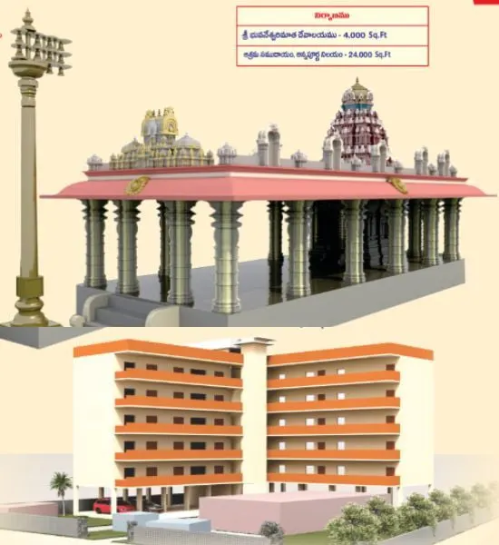
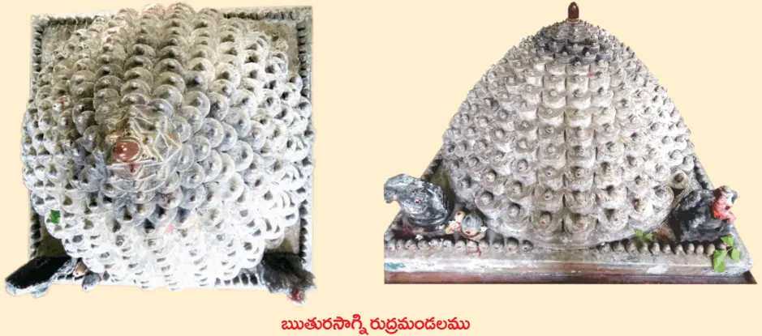

నూతన ఆలయం నిర్మాణం

మహామాయ ఐన శ్రీ భువనేశ్వరి మాత విశ్వమంతటికి మహారాజ్ఞ్ని, హ్రీంకార బీజరూపిణి. పరమ శాంతి స్వరూపిణి. శ్రీ భువనేశ్వరి విద్య దశ మహావిద్యలలో నాల్గవది. అట్టి మాత ఆలయము ఆగమ శాస్త్రానుగుణంగా స్థపతుల స్థాపత్యంతో కృష్ణశిలతో నిర్మిస్తున్నాము. దేవాలయ పవిత్రత, శాశ్వతత్వములను దృష్టిలో ఉంచుకొని ఈ విధముగా నిర్మించతలపెట్టినాము. ఒక్కదేవాలయ నిర్మాణము కొరకే రూ. 3.00 కోట్లు ఖర్చు అంచనా వేయబడింది.
అమ్మవారి మూలవిరాట్టు శక్తి పంచాయతనంతో ప్రతిష్ఠితమవుతుంది. విశేషంగా ఇక్కడ ప్రతిష్టించబడిన 17 ఆవరణలు, 367 శివలింగాలతో కూడిన మహిమాన్విత ఋతురసాగ్ని రుద్రమండలమును కూడా కృష్ణశిలతో పునఃనిర్మించి తిరిగి 367గురు దంపతులచేత 367 బాణ లింగాలు పునఃప్రతిష్టింప చేయబడును. అలాగే నిరంతరం అన్నదానం చేయుటకు, శాశ్వతమైన అన్నపూర్ణ పథకం నిర్వహించుటకు అన్నపూర్ణ నిలయం, వంటగది, వంట సామాగ్రి సమకూర్చుకొనవలెను.
ప్రస్తుత ఆధునిక జీవనశైలిలో వివిధ ఆలయాలు, సంప్రదాయ మఠాలు తమ ఆధ్వర్యంలో వేద పండితుల సలహా సహకారాలతో అనేక ధార్మిక వైదిక కార్యక్రమాలు నిర్వహిస్తూ సమాజానికి మార్గదర్శనం చేస్తున్నాయి. గన్నవరంలో ఉన్న శ్రీ చిదానంద ఆశ్రమం, శ్రీ భువనేశ్వరి పీఠము ఎన్నో దశాబ్దాలుగా ఇటువంటి ఆధ్యాత్మిక, వైదిక, సాంప్రదాయిక సేవలను అందిస్తూ ఎంతో మందికి శ్రద్ధా కేంద్రంగా ప్రేరణ ఇస్తున్నాయి. మహానుభావులైన ఇక్కడి యతీశ్వరుల బోధనల ద్వారా ఎన్నో కుటుంబాలు సనాతన ఆచర వ్యవహారాలను అనుసరిస్తూ వారి వ్యక్తిగత ధార్మిక జీవితాలను విజయవంతంగా గడుపుతున్నాయి.
ఘనమైన చరిత్ర కలిగిన మన భువనేశ్వరీ పీఠంలో ప్రస్తుతం క్షీణదశలో ఉన్న భవనాలకు కాలానుగుణమైన మార్పులు చేయడం ద్వారా రాబోయే కాలంలో మరెన్నో తరాలకు ఆధ్యాత్మిక కేంద్రంగా పీఠం తన సేవలను కొనసాగించగలుగుతుంది. ఈ మహత్కార్యంలో పాల్గొనవలసిందిగా అందరినీ ఆహ్వానిస్తున్నాము. ధర్మరక్షణ కోసం పని చేస్తున్న ఆచార్యులు, పీఠాలకు మనమందరం ఆర్థిక సహాయ సహకారాలు అందించడం ద్వారా మన జీవితం సార్థకత పొందగలదు. ఇక ధర్మ శాస్త్రాలను అనుసరించి దేవాలయ నిర్మాణంలో పాల్గొనేవారు తరతరాల వరకూ ఉత్తమ ఫలితాలను పొందుతారు.
సనాతన ధర్మనికి ఎన్నో సవాళ్లు ఎదురవుతున్న ప్రస్తుత పరిస్థితులలో దేవాలయాలను, పీఠాలను కాపాడుకోవలసిన బాధ్యత మనందరిపైన ఉన్నది. అందుకోసం మనవంతు సమర్పణను ధన, వస్తు రూపంగా అందించాలి. అందరూ తరలి వచ్చి ఈ మహత్ కార్యంలో సహకరించవలసినదిగా ప్రార్ధన.

నూతన సముదాయములో ముఖ్య నిర్మాణాలు
శ్రీ భువనేశ్వరి మాత ఆలయము
- ఆలయం
- ధ్యాన మందిరము
శ్రీ చిదానంద ఆశ్రమము
- పీఠాధిపతి నివాసము
- యతి సదనము
- పురోహితుల నివాసము
- సిబ్బంది నివాసాలు
- సమావేశ మందిరము
- యాత్రికుల వసతి
శ్రీ అన్నపూర్ణ నిలయము
- షోడశ స్తంభ యాగశాల
- కార్యాలయం, గ్రంధాలయము
- భోజనశాల, వంటగది
- యాత్రికుల నివాసములు- 20
- సభా మందిరము